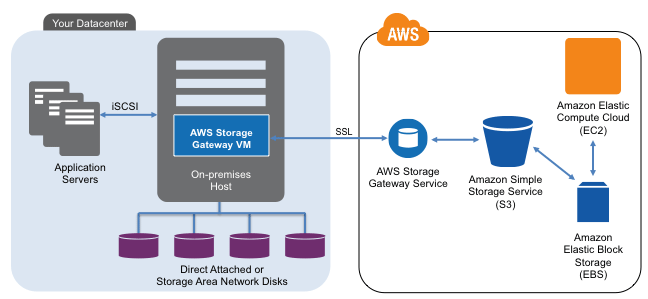
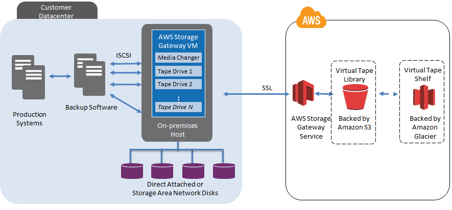

The AWS Storage Gateway supports three configurations:
Gateway-Cached Volumes: Store your primary data in Amazon S3, and retain frequently accessed data locally. Why use it? to provide substantial cost savings on primary storage, minimize the need to scale your storage on-premises, while retaining low-latency access to your frequently accessed data.
Gateway-Stored Volumes: In the event you need low-latency access to your entire data set, you can configure your on-premises data gateway to store your primary data locally, and asynchronously back up point-in-time snapshots of this data to Amazon S3. Why use it? to provide durable and inexpensive off-site backups that you can recover locally or from Amazon EC2 if, for example, you need replacement capacity for disaster recovery.
Gateway-Virtual Tape Library (Gateway-VTL): With Gateway-VTL you can have a limitless collection of virtual tapes. Each virtual tape can be stored in a Virtual Tape Library backed by Amazon S3 or a Virtual Tape Shelf backed by Amazon Glacier. The Virtual Tape Library exposes an industry standard iSCSI interface which provides your backup application with on-line access to the virtual tapes. Why use it? to provide low-cost reliable backup.
The following diagram provides an overview of the AWS Storage Gateway deployment: 
The following diagram provides an overview of the Gateway-VTL deployment: 
Gateway Pricing: $119.00 per activated virtual gateway appliance / month Storage Pricing: See here for details
You can choose to run AWS Storage Gateway either on-premises, as a virtual machine (VM) appliance, or in AWS, as an Amazon EC2 instance. You can deploy your gateway on a host in your on-premises data center. AWS Storage Gateway supports the hypervisors VMware ESXi Hypervisor and Microsoft Hyper-V 2008 R2.
Yes. It is possible to deploy Storage Gateway on AWS EC2. See here for details: AWS Storage Gateway Announces Gateway for Amazon EC2.